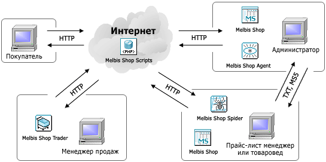

Программный комплекс Melbis Shop обеспечивает создание интернет-магазина и последующее его сопровождение.
Программный комплекс состоит из нескольких частей:

Melbis Shop - это windows-программа в которой администратор формирует прайс-лист, структуру каталогов, задает параметры магазина, контролирует его работу. Также, этой программой пользуются менеджеры, которые набивают описания товаров и передают их в формате MS5.
Melbis Shop Script - это php-скрипты, которые устанавливаются на хостинге и собственно обеспечивают работу интернет магазина (интернет-витрина). В демонстрационной версии программы, скрипты идут в закодированном виде.
Melbis Shop Agent - это windows-программа в которой администратор отслеживает движения покупателей по магазину в реальном времени, а также получает уникальные статистические отчеты, например "Заказы с доменов" или "Заказы по поисковым фразам".
Melbis Shop Trader - это windows-программа для менеджеров интернет магазина для автоматизации приема и обработки заказов. Программа позволяет принимать и сохранять заказы в т.ч. без подключения к Интернет, а потом передавать их на сервер в единый центр.
Melbis Shop Spider - это windows-программа помогает товароведам независимо от администратора магазина своевременно обновлять остатки и цены товаров. Может работать в автоматическом режиме, самостоятельно обновляя данные из программ, например 1С.
Настоящее руководство написано к версии программы 5.4.0, но может содержать иллюстрации от более ранних версий, в случае, если иллюстрируемые объекты не претерпели изменений.
Следует также иметь в виду, что иллюстрации, касающиеся веб-части магазина, приведены для типового дизайна и настроек.